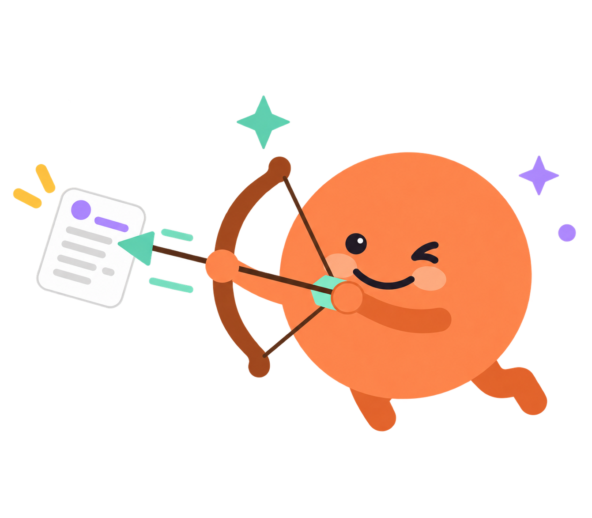

7 farklı iş platformundan toplanan güncel ilanlar, CV'ne göre akıllıca sıralanır.

Karmaşık bir kurulum gerektirmez; arama, veri toplama ve eşleştirme sürecini senin yerine otomatikleştirir.
Aramak istediğin pozisyonu ve konumu belirterek süreci başlat.
Yedi farklı platformdaki güncel ilanlar otomatik olarak bir araya getirilir.
CV'n yüklenir, sana en uygun pozisyonlar otomatik olarak sıralanır.
Kişisel iş aramanı hızlandıran özellikler.
LinkedIn, Indeed, Upwork, Kariyer.net, Eleman.net, Glassdoor ve RemoteOK'u tek yerden tara.
CV'ni embedding modeliyle analiz edip en alakalı ilanları bulur.
Artımlı tarama ile sadece yeni ilanları çeker, eskiyeni gizler.
Kişisel kullanım için tasarlandı, kendi bilgisayarında çalışır.
CV'ni yükle, sana en uygun ilanları saniyeler içinde gör.
Hemen Dene →